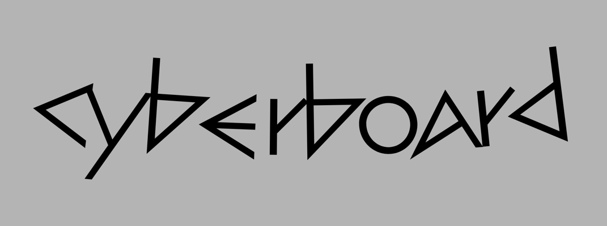

CyberBoard
A DIY ultra-minimal one-wheel electric board built from a used hoverboard.
Lead designer & builder · Oct 2026 – present
Problem
Build a rideable single-wheel board with a smooth, sharp-edged brushed-aluminum look on a tight budget and basic tools.
Constraints
- Budget $150–200 total
- Tools: older 3D printer (PLA), FreeCAD, household drill
- Serviceable: top plates on screws into rivet nuts
- Treaded tire for wet roads and snow
Key result
Not built yet. Donor board bought ($40); its battery read ~0.7 V on the bench, so a 36V 4.4Ah pack was ordered. $88.99 of the $150–200 budget spent.
STAR
Situation
Commercial one-wheel boards cost far more than my budget.
Task
Design and build one from a ~$40 used 6.5" 36V hoverboard: parts, design decisions and fabrication.
Action
- Wheel: 11x7.10-5 treaded go-kart tire with the two hub motors machined to act as the rim
- Frame: aluminum rails with a ~27.5 mm riser (Rev A.3) so a larger battery fits under the deck
- Power: replaced the dead 2.0Ah donor pack with a 36V 4.4Ah 10S2P pack (XT60, BMS)
- Lighting: ESP32 reads a hall sensor (MPU6050 backup) so the front end face glows white and the rear red; 36V→5V buck
- Bent sheet-aluminum splash guards; custom rail sticker
Result
First bench check: donor pack measured ~0.7 V (below BMS cutoff, so treated as dead). No ride data yet. Success criteria: rides stably, LEDs switch correctly with direction, stays within budget, top plates removable for service.
Design decisions
| Decision | Options / choice | Tradeoff |
|---|---|---|
| Hoverboard donor | Reuse motors, controller and charger vs buying parts | Far cheaper; tied to stock electronics |
| Bigger battery + riser | Keep the 2.0Ah donor pack vs a 36V 4.4Ah pack | Donor pack dead and too small for range; riser raises the deck so the new pack fits |
| Treaded tire | Treaded vs slick go-kart tire | Better wet/snow grip; ice still needs studs |
| Screws into rivet nuts | Serviceable top plates vs riveted | More parts, but easy access to electronics |
Testing & iteration
- Done: donor pack bench reading, ~0.7 V at the terminals (dead)
- Planned: bench-test donor motors and gyro with the new pack
- Planned: verify LED direction switching
- Planned: low-speed ride tests before full speed
Visuals



Next steps
- Bench-test motors, gyro and controller with the new pack
- Measure the donor (axle flats, mounts, controller) for Rev B
- Settle riser material and deck finish (smooth vs diamond plate)
- Order the tire; fabricate, wire, test